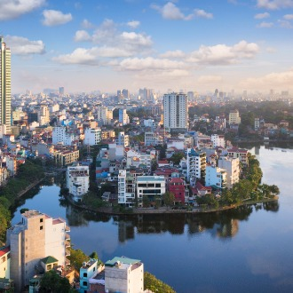
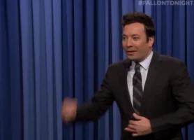
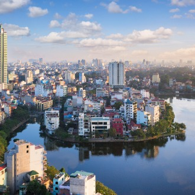
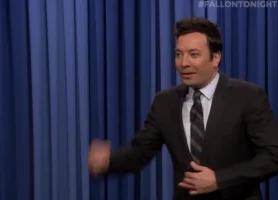

| 1. Where are you from? | He is from Hanoi, Vietnam
 |
| 2. Do you have any siblings? Any pets? | Hai has an older sister, but no pets. He would love a dog though! |
| 3. What are some of your favorite things? | Some of his hobbies include listening to Korean music, Kpop, and participating in the Kpop dance clube here at Lehigh! Hai also likes to watch animated (Pixar) movies. His favorite food is Korean fried chicken. YUM :)
|
| 4. How would your friends describe you? | Hai says his friends may think he is shy based on first impression, but after a becoming closer, they would say he is energetic.
 |
| 5. Have you traveled anywhere interesting? | NYC for New Years Eve!
|
| 6. Tell me your craziest/scariest experience. | Definitely the NYC trip on New Years. Standing in crowds from noon until the ball-drop at midnight with no eating or drinking. 12 hours! |
| 7. Biggest fear? | Losing a loved one.
|
| 8. Why did you chose Lehigh? | Hai chose Lehigh because it is a high ranking school with a good computer sciene program and had a pretty campus (based on images). However, he does not like the stairs.
|
| 9. What is your major? Minor? Dream career? | Hai is a computer science major, but is considering double majoring with graphic design. He hopes to have a future in web development or UI/UX as it fuses the two interests. |
| 10. What would you do if you were given a million dollars? | With a million dollar, he would buy a house in San Diego, California because is a beautfiful city that is by the water with amazing weather.
|